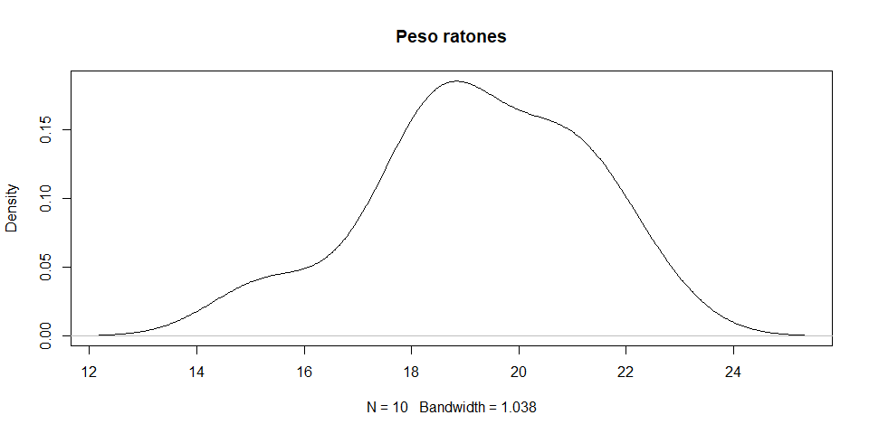
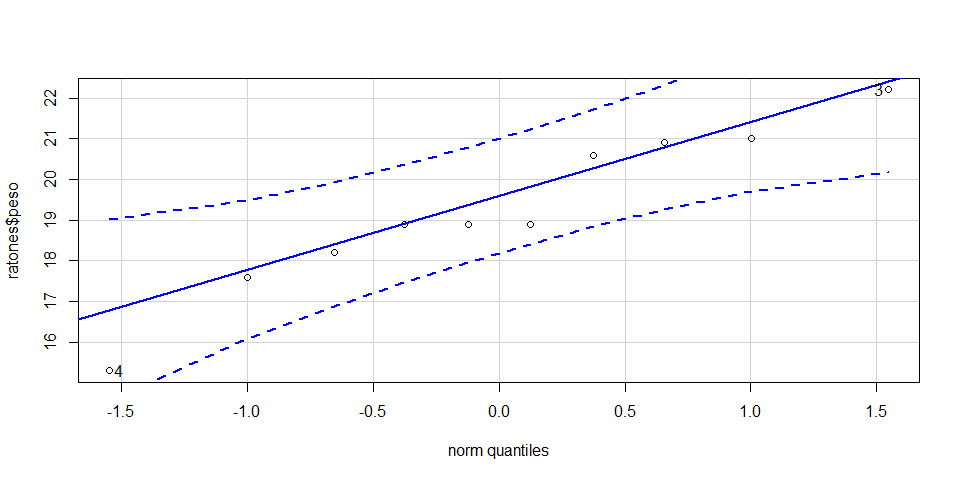
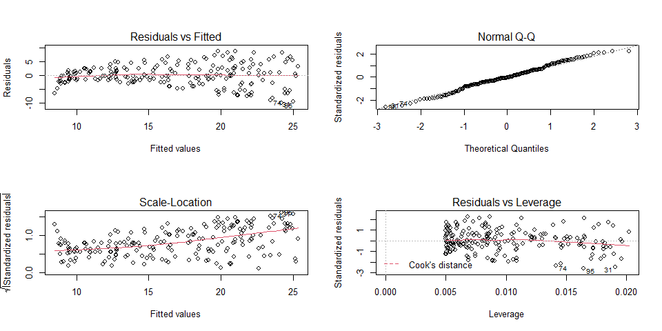

Análisis Estadístico Básico con R
Práctica de Casa 03 - Análisis Estadístico Básico I
Last compiled: 2021-03-11
Link de la práctica desarrollada: Práctica de Casa 03 - Análisis Estadístico Básico I (irwingss.github.io)
Realiza los siguientes ejercicios durante tu tiempo libre para reforzar la información sobre análisis estadístico que hemos aprendido entre las semanas 4 y 5 del programa (Curso 2).
Recuerda realizar esta práctica luego de haber desarrollado:
R-Notebook-C2-S1.Rmd
R-Notebook-C2-S2.Rmd
Nota 1: Si necesitas crear un code chunk los atajos en el teclado son en WINDOWS:
Crtl+Alt+i, y en MAC:Command+Alt+i.Nota 2: Deberás descargar los archivos excel del Campus Virtual de Instituto de Ciencias Antonio Brack para que los cargues a R y puedas desarrollar los ejercicios. Para poder cargarlos ejecutándo el código que te dejamos en cada ejercicio, debes verificar que pegaste los archivos excel en el directorio de trabajo actual de tu RStudio, el cual puedes conocer si ejecutas:
getwd()Activa las librarías a usar
library(tidyverse)
library(moments)
library(nortest)
library(rstatix)
library(broom)
library(pwr)Ejercicio 1: Comparaciones de una muestra
Se tiene un conjunto de datos de pesos de una muestra de ratones. Se quiere conocer si el promedio de peso del grupo de ratones es significativamente:
diferente de 26 gr.,
mayor a 26 gr.,
menor a 26 gr.
Debes, por lo tanto, realizar tres test de comparación de grupos. Antes de realizar los análisis, deberás comprobar normalidad del conjunto de datos de peso utilizando todas las técnicas aprendidas en clase.
Carga el excel data_ratones.xlsx y asígnale el nombre ratones.
Desarrolla lo siguiente:
# Carga el excel data_ratones.xlsx y asígnale el nombre ratones.
ratones <- openxlsx::read.xlsx("~\\Proyectos_R\\2021\\R Data Science\\C2-S2\\data_ratones.xlsx")
# Realiza un boxplot y gráfico de densidad para
# explorar cómo luce la distribución de los datos.
# Trata de analizar la curva y predecir si habría
# normalidad en los datos:
# Boxplot:
boxplot(ratones$peso)
# Gráfico de Densidad:
plot(density(ratones$peso), main = "Peso ratones")
# Ejecuta un test de normalidad con los datos:
shapiro.test(ratones$peso)##
## Shapiro-Wilk normality test
##
## data: ratones$peso
## W = 0.9526, p-value = 0.6993# Verifica la simetría y curtosis del conjunto de datos:
library(moments)
skewness(ratones$peso)## [1] -0.4288947kurtosis(ratones$peso)## [1] 2.669256# Crea un gráfico Q-Q Plot
qqnorm(ratones$peso)
qqline(ratones$peso)
Sección de aprendizaje
Ahora aprenderás a realizar un Q-Q Plot más rápido con la función qqPlot() de la libraría car. Instala la librería car desde el panel Packages/Install o ejecutándo el siguiente código:
install.packages("car")# Activa la librería car
library(car)
# Crea el qqPlot() de la base de datos ratones$peso
qqPlot(ratones$peso)
## [1] 4 3Continua con el Ejercicio 1:
# Test 1: Averigua si el promedio de peso de los ratones evaluados
# difiere significativamente de 25 gr (prueba de dos colas)
t.test(ratones$peso, mu = 26, alternative = "two.sided")##
## One Sample t-test
##
## data: ratones$peso
## t = -10.657, df = 9, p-value = 2.102e-06
## alternative hypothesis: true mean is not equal to 26
## 95 percent confidence interval:
## 17.8172 20.6828
## sample estimates:
## mean of x
## 19.25# Test 2: Averigua si el promedio de peso de los ratones evaluados
# es significativamente menor que 25 gr (prueba de una colas)
t.test(ratones$peso, mu = 26, alternative = "less")##
## One Sample t-test
##
## data: ratones$peso
## t = -10.657, df = 9, p-value = 1.051e-06
## alternative hypothesis: true mean is less than 26
## 95 percent confidence interval:
## -Inf 20.41105
## sample estimates:
## mean of x
## 19.25# Test 3: Averigua si el promedio de peso de los ratones evaluados
# es significativamente mayor que 25 gr (prueba de una colas)
t.test(ratones$peso, mu = 26, alternative = "greater")##
## One Sample t-test
##
## data: ratones$peso
## t = -10.657, df = 9, p-value = 1
## alternative hypothesis: true mean is greater than 26
## 95 percent confidence interval:
## 18.08895 Inf
## sample estimates:
## mean of x
## 19.25Ejercicio 2: Comparaciones de dos muestras
En un estudio, se han evaluado el efecto de 2 drogas (Columna Droga, valores A y B) en 8 pacientes y se pretende conocer:
si existen diferencias significativas entre el conjunto de datos de la droga A y el conjunto de la droga B.
si el promedio del grupo A es significativamente mayor al promedio del grupo B.
si el promedio del grupo A es significativamente menor al promedio del grupo B.
Debes realizar tres test de T. Da un vistazo a los datos para decidir cual test debes realizar en base a la independencia de los datos o diferencia de varianza.
Carga el excel glicolipido.xlsx y asígnale el nombre glico.
Desarrolla lo siguiente:
# Carga el excel glicolipido.xlsx y asígnale el nombre glico.
glico <- openxlsx::read.xlsx("~\\Proyectos_R\\2021\\R Data Science\\C2-S2\\glicolipido.xlsx")
# Realiza el boxplot para cada droga
boxplot(Glicolipido~Droga, data=glico)# Test 1: averigua si existen diferencias significativas entre el conjunto de datos de la droga A y el conjunto de la droga B
t.test(Glicolipido ~ Droga, data = glico, paired = TRUE)##
## Paired t-test
##
## data: Glicolipido by Droga
## t = 5.9368, df = 7, p-value = 0.0005777
## alternative hypothesis: true difference in means is not equal to 0
## 95 percent confidence interval:
## 6.904491 16.045509
## sample estimates:
## mean of the differences
## 11.475# Test 2: averigua si el promedio del grupo A es significativamente mayor al promedio del grupo B
t.test(Glicolipido ~ Droga, data = glico,
paired = TRUE, alternative = "greater")##
## Paired t-test
##
## data: Glicolipido by Droga
## t = 5.9368, df = 7, p-value = 0.0002888
## alternative hypothesis: true difference in means is greater than 0
## 95 percent confidence interval:
## 7.813028 Inf
## sample estimates:
## mean of the differences
## 11.475# Test 3: averigua si el promedio del grupo A es significativamente menor al promedio del grupo B.
t.test(Glicolipido ~ Droga, data = glico,
paired = TRUE, alternative = "less")##
## Paired t-test
##
## data: Glicolipido by Droga
## t = 5.9368, df = 7, p-value = 0.9997
## alternative hypothesis: true difference in means is less than 0
## 95 percent confidence interval:
## -Inf 15.13697
## sample estimates:
## mean of the differences
## 11.475Ejercicio 3: Comparaciones de dos muestras
Siguiendo con la misma base de datos anterior, verifica si existen diferencias estadísticas entre los sexos para la medición de glicolipido (columna Glicolipido). Comprueba:
si existen diferencias significativas entre el conjunto de datos sexo Hombre y el conjunto sexo Mujer.
si el promedio del sexo Hombre es significativamente mayor al promedio del sexo Mujer.
si el promedio del sexo Hombre es significativamente menor al promedio del sexo Mujer.
Debes realizar tres test de T. Da un vistazo a los datos para decidir cual test debes realizar en base a la independencia de los datos o diferencia de varianza.
# Test 1: averigua si existen diferencias significativas entre el conjunto sexo Hombre y el conjunto sexo Mujer
t.test(Glicolipido ~ Sexo, data = glico, paired = TRUE)##
## Paired t-test
##
## data: Glicolipido by Sexo
## t = -0.67495, df = 7, p-value = 0.5214
## alternative hypothesis: true difference in means is not equal to 0
## 95 percent confidence interval:
## -2.139111 1.189111
## sample estimates:
## mean of the differences
## -0.475# Test 2: averigua si el promedio del sexo Hombre es significativamente mayor al promedio del sexo Mujer
t.test(Glicolipido ~ Sexo, data = glico,
paired = TRUE, alternative = "greater")##
## Paired t-test
##
## data: Glicolipido by Sexo
## t = -0.67495, df = 7, p-value = 0.7393
## alternative hypothesis: true difference in means is greater than 0
## 95 percent confidence interval:
## -1.808315 Inf
## sample estimates:
## mean of the differences
## -0.475# Test 3: averigua si el promedio del sexo Hombre es significativamente menor al promedio del sexo Mujer
t.test(Glicolipido ~ Sexo, data = glico,
paired = TRUE, alternative = "less")##
## Paired t-test
##
## data: Glicolipido by Sexo
## t = -0.67495, df = 7, p-value = 0.2607
## alternative hypothesis: true difference in means is less than 0
## 95 percent confidence interval:
## -Inf 0.8583148
## sample estimates:
## mean of the differences
## -0.475Ejercicio 4: LM
Un estudio de la microbiota del suelo de una región trató de averiguar cuánto varía la concentración de nitrógeno disponible en el suelo (columna conc.N) en relación a la cantidad de colonias de bacterias nitrificantes (columna colonias) halladas en las muestras obtenidas de la siembra estandarizada en placas petri.
Carga el excel suelos.xlsx y asígnale el nombre suelos.
Parte 1: Modelos lineales simples
Desarrolla lo siguiente:
# Carga el excel suelos.xlsx y asígnale el nombre suelos.
suelos <- openxlsx::read.xlsx("~\\Proyectos_R\\2021\\R Data Science\\C2-S2\\suelos.xlsx")
# Búsqueda de outliers con boxplot
boxplot(suelos$conc.N)boxplot.stats(suelos$conc.N)$out## [1] 70 50# Eliminación de outliers
outliers <- identify_outliers(suelos, conc.N)
sinOutliers <- anti_join(suelos, outliers) ## Joining, by = c("conc.N", "colonias", "plant.simbio", "div.esp.descomp")# Verificando que suelos ya no contiene outliers
boxplot(sinOutliers$conc.N)# Verifica linearidad de las variables respuesta y explicativa
names(sinOutliers)## [1] "conc.N" "colonias" "plant.simbio" "div.esp.descomp"plot(conc.N~colonias, data=sinOutliers)
# Realiza el modelo
modelo <- lm(conc.N~colonias, data=sinOutliers)
# Verifica las asunciones teóricas restantes
par(mfrow=c(2,2))
plot(modelo)
dev.off() #usa siempre dev.off() luego de par() para evitar que siga activo## null device
## 1# Comprueba la normalidad de los residuales, obtenidos con la función resid()
nortest::ad.test(resid(modelo))##
## Anderson-Darling normality test
##
## data: resid(modelo)
## A = 0.49121, p-value = 0.217moments::skewness(resid(modelo))## [1] -0.08863202moments::kurtosis(resid(modelo))## [1] 2.779015plot(density(resid(modelo)))
# Obtén los resultados del modelo e interprétalo
summary(modelo)##
## Call:
## lm(formula = conc.N ~ colonias, data = sinOutliers)
##
## Residuals:
## Min 1Q Median 3Q Max
## -10.0632 -2.3454 -0.2295 2.4805 8.6548
##
## Coefficients:
## Estimate Std. Error t value Pr(>|t|)
## (Intercept) 8.439112 0.549412 15.36 <2e-16 ***
## colonias 0.047537 0.002691 17.67 <2e-16 ***
## ---
## Signif. codes: 0 '***' 0.001 '**' 0.01 '*' 0.05 '.' 0.1 ' ' 1
##
## Residual standard error: 3.91 on 198 degrees of freedom
## Multiple R-squared: 0.6119, Adjusted R-squared: 0.6099
## F-statistic: 312.1 on 1 and 198 DF, p-value: < 2.2e-16Interpreta los resultados de la regresión y responde:
P1: ¿El modelo fue significativo?
Rpta/. Sí, con p-value: < 2.2e-16, generado a partir de la prueba F con valor 312.1 y 198 grados de libertad.
P2: ¿Cuánto aumenta el nitrógeno en relación a las colonias de bacterias nitrificantes contabilizadas en la muestra?
Rpta/. Por cada colonia contabilizada en la muestra sembrada en placa petri, la concentración del nitrógeno en el suelo aumenta en 0.048 unidades.
P3: ¿Cuánta varianza de la variable respuesta es explicada por la variable respuesta?
Rpta/. 60.99%, debido al Adjusted R-squared: 0.6099
Parte 2: Modelos lineales múltiples (aditivos)
Considera incluir en el modelo dos nuevas variables explicativas: un indice de diversidad de plantas plant.simbio y la diversidad de especies descomponedoras de materia orgánica div.esp.descomp como potenciales variables que puedan mejorar el modelo. Crea la variable modelo2 incluyendo dichas nuevas variables y verifica:
Si
modelo2es significativo.Si hay variables que no sean significativas (ver columna
Pr(>|t|)en el resumen desummary()).
names(sinOutliers)## [1] "conc.N" "colonias" "plant.simbio" "div.esp.descomp"modelo2 <- lm(conc.N~colonias+plant.simbio+div.esp.descomp, data=sinOutliers)
modelo2 <- lm(conc.N~.,data=sinOutliers)
summary(modelo2)##
## Call:
## lm(formula = conc.N ~ ., data = sinOutliers)
##
## Residuals:
## Min 1Q Median 3Q Max
## -10.5161 -1.0677 0.2979 1.4510 3.4013
##
## Coefficients:
## Estimate Std. Error t value Pr(>|t|)
## (Intercept) 3.565738 0.442005 8.067 7.05e-14 ***
## colonias 0.045751 0.001394 32.824 < 2e-16 ***
## plant.simbio 0.187530 0.008311 22.564 < 2e-16 ***
## div.esp.descomp -0.001294 0.005660 -0.229 0.819
## ---
## Signif. codes: 0 '***' 0.001 '**' 0.01 '*' 0.05 '.' 0.1 ' ' 1
##
## Residual standard error: 2.023 on 196 degrees of freedom
## Multiple R-squared: 0.8972, Adjusted R-squared: 0.8956
## F-statistic: 570.3 on 3 and 196 DF, p-value: < 2.2e-16De haber detectado alguna variable explicativa no significativa, esta debe ser eliminada del modelo ya que le no aportan nada. Por el contrario, el modelo se beneficia al eliminar variables no significativas. Crea la variable modelo3 que contenga el nuevo modelo mejorado.
modelo3 <- lm(conc.N~.,data=sinOutliers[,-4])
summary(modelo3)##
## Call:
## lm(formula = conc.N ~ ., data = sinOutliers[, -4])
##
## Residuals:
## Min 1Q Median 3Q Max
## -10.5572 -1.0502 0.2906 1.4049 3.3994
##
## Coefficients:
## Estimate Std. Error t value Pr(>|t|)
## (Intercept) 3.50532 0.35339 9.919 <2e-16 ***
## colonias 0.04575 0.00139 32.909 <2e-16 ***
## plant.simbio 0.18799 0.00804 23.382 <2e-16 ***
## ---
## Signif. codes: 0 '***' 0.001 '**' 0.01 '*' 0.05 '.' 0.1 ' ' 1
##
## Residual standard error: 2.018 on 197 degrees of freedom
## Multiple R-squared: 0.8972, Adjusted R-squared: 0.8962
## F-statistic: 859.6 on 2 and 197 DF, p-value: < 2.2e-16P4: ¿El modelo muestra alguna mejora respecto a la cantidad de varianza explicada por las variables independientes (explicativas)? (comparar R cuadrados ajustados de los modelos 2 y 3)
Rpta/. Sí se mejoró el modelo al incluir a la variable plant.simbio, con un R2 ajustado de 0.89, es decir que las variables explicativas de este modelo explican el 89% de la varianza de la variable respuesta conc.N.
Parte 3: Interpretación de coeficientes en modelos simples o múltiples aditivos
En consecuencia, podemos leer un modelo simple y aditivo de la siguiente manera, siendo que la fórmula de una regresión simple es:
\[ y=β0+β1∗x1 \]
y la de una regresión múltiple aditiva con dos variables explicativas es:
\[ y=β0+β1∗x1+β2∗x2 \]
En ambos casos, los coeficientes se leen igual:
Intercepto (β0): es el promedio de la variable respuesta y cuando la o las variables respuesta son 0 (es decir, sin contar con el efecto de la variable explicativa).
\[ y=β0+β1∗(0) = β0+0 = β0 \]
o para las regresiones múltiples aditivas\[ y=β0+β1∗(0)+β2∗(0) = β0+0+0 = β0 \]
- Pendiente de x1 (β1) o x2 (β2): se interpreta como "el aumento de 1 unidad de la variable explicativa x1, representa un aumento de β1 en el promedio de la variable respuesta y. Lo mismo para x2 y su respectivo aumento β2.
Parte 4: Modelos lineales múltiples (interacción)
Este tipo de modelos se desarrollan cuando uno quiere responder preguntas del tipo:
¿La variable C modera la relación entre B y A?,
¿La fuerza del efecto B y A depende de C?,
¿Cómo afecta C a la relación entre B y A? ,
¿Cómo influye C en la relación B y A?
Ahora, verifica si es que, adicionalmente a los efectos principales individuales de las variables, existe algún efecto significativo de la interacción de las variables respuesta colonias y plant.simbio que explique algo de la varianza restante de la variable respuesta conc.N. Para indicar interacciones debes colocar un símbolo de multiplicación entre las variables que deseas que interactúen en el modelo.
modelo4 <- lm(conc.N ~ colonias*plant.simbio, data = sinOutliers)
summary(modelo4)##
## Call:
## lm(formula = conc.N ~ colonias * plant.simbio, data = sinOutliers)
##
## Residuals:
## Min 1Q Median 3Q Max
## -7.6039 -0.4833 0.2197 0.7137 1.8295
##
## Coefficients:
## Estimate Std. Error t value Pr(>|t|)
## (Intercept) 8.100e+00 2.974e-01 27.233 <2e-16 ***
## colonias 1.910e-02 1.504e-03 12.699 <2e-16 ***
## plant.simbio 2.886e-02 8.905e-03 3.241 0.0014 **
## colonias:plant.simbio 9.054e-04 4.368e-05 20.727 <2e-16 ***
## ---
## Signif. codes: 0 '***' 0.001 '**' 0.01 '*' 0.05 '.' 0.1 ' ' 1
##
## Residual standard error: 1.132 on 196 degrees of freedom
## Multiple R-squared: 0.9678, Adjusted R-squared: 0.9673
## F-statistic: 1963 on 3 and 196 DF, p-value: < 2.2e-16Parte 5: Interpretación de coeficientes en modelos lineales múltiples (interacción)
Cuando existe un efecto de interacción, el efecto de una variable explicativa (x1) depende de los valores de una o más variables explicativas (x2, x3,…).
La interacción en un modelo con interacciones cambia el cómo interpretamos los resultados. Primero hay que revisar si la interacción fue significativa. Antes de interpretar, revisemos la fórmula de la regresión múltiple con interacción:\[ y=b0+b1∗x1+b2∗x2+b3∗x1∗x2 \]
Si factorizamos la fórmula tomando en cuenta x1, tenemos:
\[ y=(b0+b2∗x2)+(b1+b3∗x2)∗x1 \]
Si nos percatamos, esa fórmula se asemeja en estructura a \(y=b0+b1*x1\), ¿cierto?, significa que de la ecuación anterior, \((b1+b3∗x2)\) es la pendiente de x1. Es decir, la pendiente de la variable x1 cambiará por la influencia de la variable x2.
Cuando se realiza una regresión múltiple con interacciones buscamos interpretar el término de la interacción, por lo que no nos interesa demasiado el efecto de cada variable respuesta independientemente una de la otra.
- El efecto de
colonias(la primera variable explicativa) es: \(β1*x1+ β3*x1*x2\)
lo que es en nuestro ejemplo: \(β1*colonias + β3*colonias*plant.simbio\)
Reemplazando los valores de la regresión β1 es 0.04575 y β3 es 0.18799, tenemos: \(0.04575*colonias + 0.18799*colonias*plant.simbio\)
Para interpretar decimos, si la variable plant.simbio es 0 (el indice de diversidad de plantas simbióticas es 0), entonces conc.N (la variable respuesta y) se reduce a \(0.04575*colonias + 0.18799*colonias*0 = 0.04575*colonias\), es decir, cuando plant.simbio es 0, una unidad de incremento de colonias, aumenta el promedio esperado de la variable conc.N (y) en 0.04575 unidades.
Para interpretar decimos, si la variable plant.simbio es 1 (el indice de diversidad de plantas simbióticas es 0), entonces conc.N (la variable respuesta y) se reduce a \(0.04575*colonias + 0.18799*colonias*1 = 0.04575*colonias + 0.18799*colonias\), es decir, cuando plant.simbio es 1, una unidad de incremento de colonias, incrementa el promedio esperado de la variable conc.N (y) en 0.04575 + 0.18799 unidades, o 0.23374 unidades.
De la misma manera podrías interpretar el efecto de
plant.simbio.Haciendo una interpretación “más del mundo real”, podemos decir: la concentración de nitrógeno (
conc.N) tiende a ser mayor en zonas donde la cantidad de unidades formadoras de colonias (colonias) es mayor; sin embargo, esta relación se incrementa más cuando los suelos, además de tener mayor abundancia de unidades formadoras de colonias, tiene también mayor diversidad de plantas simbióticas (plant.simbio). En suma, la fuerza de la relación positiva entreconc.N(y) ycolonias(x1) depende de la presencia de un mayor valor deplant.simbio(x2) en la zona de estudios.
Nota final: Gracias al principio jerárquico en modelos lineales, si incluimos una interacción en un modelo y es significativa, no importa si p-valores de los efectos independientes no lo son.
Ejercicio 5: ANOVA
Se realizaron mediciones de la longitud total coporal (columna long_total) de tres subespecie de la especie Microlophus thoraccicus, halladas en la costa norte de Peru. Realiza en análisis de varianza ANOVA para corroborar si existen diferencias entre los grupos. De hallar diferencias, identifica el grupo que es diferente entre los tres. Carga el excel sp.xlsx para realizar este ejercicio.
# Carga el excel sp.xlsx y asígnale el nombre sp
sp <- openxlsx::read.xlsx("~\\Proyectos_R\\2021\\R Data Science\\C2-S2\\sp.xlsx")
# Elimina outliers
out <- sp %>%
group_by(ssp) %>%
identify_outliers(long_total)
sp2 <- anti_join(sp,out)
# Con la base de datos filtrada, si es que fue necesario,
# analiza qué anova realizarás. Comprueba si se debe
# realizar un anova balanceado o no balanceado.
table(sp$ssp)
# Realiza el modelo lineal y asignalo con le nombre "modelo"
modelo <- lm(long_total ~ ssp, data = sp)
# Realiza el ANOVA
anova(modelo)
# Verifica la normalidad de los residuales
shapiro.test(resid(modelo))
# Verifica la homogeneidad de varianzas
bartlett.test(long_total ~ ssp, data = sp)
# Realiza el Test posthoc respectivo
TukeyHSD(aov(modelo))Ejercicio 6: Balancear un ANOVA (una vía)
Muchas veces tenemos N muestral suficiente como para uniformizar el ANOVA. Esta decisión, puede explotar lo mejor del ANOVA balanceado frente a uno desbalanceado. En general, se asume que los ANOVA balanceados tienen un mayor poder estadístico, menor susceptibilidad ante ligeras desviaciones del supuesto de homocedasticidad (igualdad) de varianzas entre grupos, que lo ANOVA no balanceados. Así que este procedimiento te ayudará ante aquellas situaciones en las que necesites balancear.
En el siguiente ejemplo verificaremos si existe diferencias significativas entre los niveles de la variable explicativa tratamiento, respecto a la variable respuesta y. Los niveles de la variable explicativa son 3: Ctrl, trat1 y trat2. Esta base de datos es desbalanceada. Verifica la presencia de outliers y elimínalos. Posteriormente, trata de balancear el análisis, eliminando aleatoriamente filas dentro de los niveles que lo requieran para que todos tengan la misma cantidad de observaciones. Continua verificando los supuestos teóricos del ANOVA balanceado y obtén los resultados. Si el ejercicio lo requiere, realiza un test post hoc para identificar qué nivel de tratamiento es el que genera un mayor incremento en el promedio estimado de la variable y.
Carga el excel ejercicio_grupos.xlsxpara comenzar el ejercicio.
# Carga el excel ejercicio_grupos.xlsx y asígnale el nombre grupos
grupos <- openxlsx::read.xlsx("~\\Proyectos_R\\2021\\R Data Science\\C2-S2\\ejercicio_grupos.xlsx")
# Genera un boxplot para verificar si hay outliers
# en la variable respuesta y dentro de cada nivel
# de la variable tratamiento.
boxplot(grupos$y ~ grupos$tratamiento)# Obten los outliers para cada grupo
# con identify_outliers()
outs <- grupos %>%
group_by(tratamiento) %>%
identify_outliers(y)
# A2: Elimina los outliers y asigna la tabla limpia con el
# nombre gruposLimpio
gruposLimpio <- anti_join(grupos, outs)## Joining, by = c("y", "x1", "x2", "grp", "tratamiento")# Verifica si los niveles de tratamiento están balanceados
table(gruposLimpio$tratamiento)##
## Ctrl trat1 trat2
## 32 29 30Balancea el estudio:
# Selecciona de manera aleatoria las observaciones (filas)
# que debes eliminar de gruposLimpio para cada nivel de
# tratamiento y así balancear el ANOVA
set.seed(12345)
rCtrl <- gruposLimpio %>% filter(tratamiento=="Ctrl") %>% sample_n(3)
rtrat2 <- gruposLimpio %>% filter(tratamiento=="trat2") %>% sample_n(1)
# Asigna la base de datos balanceada con el nombre gruposFinal
gruposFinal <- anti_join(gruposLimpio,rCtrl) %>% anti_join(.,rtrat2)## Joining, by = c("y", "x1", "x2", "grp", "tratamiento")
## Joining, by = c("y", "x1", "x2", "grp", "tratamiento")# Verifica si realmente está balanceado el ANOVA ahora
table(gruposFinal$tratamiento)##
## Ctrl trat1 trat2
## 29 29 29Verifica los supuestos teóricos restantes
# Realiza el modelamiento lineal
mod1 <- lm(y ~ tratamiento, data=gruposFinal)
# A3: Verifica la normalidad de los residuales
shapiro.test(resid(mod1))##
## Shapiro-Wilk normality test
##
## data: resid(mod1)
## W = 0.9906, p-value = 0.7915nortest::ad.test(resid(mod1))##
## Anderson-Darling normality test
##
## data: resid(mod1)
## A = 0.19844, p-value = 0.8838# A4: Verifica la homogeneidad de varianzas
bartlett.test(y ~ tratamiento, data=gruposFinal)##
## Bartlett test of homogeneity of variances
##
## data: y by tratamiento
## Bartlett's K-squared = 2.2933, df = 2, p-value = 0.3177Realiza el ANOVA final y su respectivo post hoc si es necesario
# Modelo final
anova(mod1)## Analysis of Variance Table
##
## Response: y
## Df Sum Sq Mean Sq F value Pr(>F)
## tratamiento 2 111.94 55.968 7.7188 0.0008368 ***
## Residuals 84 609.07 7.251
## ---
## Signif. codes: 0 '***' 0.001 '**' 0.01 '*' 0.05 '.' 0.1 ' ' 1# Post Hoc
TukeyHSD(aov(mod1))## Tukey multiple comparisons of means
## 95% family-wise confidence level
##
## Fit: aov(formula = mod1)
##
## $tratamiento
## diff lwr upr p adj
## trat1-Ctrl 1.258966 -0.4282642 2.946195 0.1824074
## trat2-Ctrl 2.774483 1.0872530 4.461712 0.0005173
## trat2-trat1 1.515517 -0.1717125 3.202747 0.0873564P1: ¿Existen diferencias significativas entre los grupos?
Rpta/. el Pr(>F) de la variable tratamiento en el resultado del ANOVA es significativo: 0.0008368 ***
P2: ¿Cuál es el tratamiento que generó un mayor incremento del promedio de la variable y?
Rpta/. Al ver el resultado del post hoc, lo primero que se debe revisar es la significancia de las diferencias entre los tratamientos. Las diferencias entre niveles que no son significativos nos indican que no hay evidencia estadística que soporte que dichas restas son diferentes de cero. Por lo que no se puede decir que hay diferencias estadísticas entre los niveles en cuestión. Eso sucede con las restas entre los promedios de trat1-Ctrl y trat2-trat1. Por lo que la única resta de promedios significativa fue trat2-Ctrl= 2.77 (p-valor 0.0005). Interpretando, decimos que: trat2 genera un promedio mayor a Ctrl, debido a que la resta de ambos es positiva. Por el contrario, no hay evidencia de que existan diferencias entre trat1-Ctrl y trat2-trat1. En consecuencia, trat2 es el tratamiento que genera un mayor incremento de y.
Ejercicio 7: Poder de análisis
Conocer el poder de un análisis nos puede ayudar a decidir si podemos incrementar el n muestral para obtener un resultado mucho más fiable, estadísticamente hablando.
Desarrolla lo siguiente:
# Calcula el tamaño del efecto del ANOVA balanceado
# qaue desarrollaste anteriormente (redondea el valor a dos decimales)
rstatix::eta_squared(anova(mod1)) %>% round(2)## tratamiento
## 0.16# Calcula el poder del análisis de dicho ANOVA
pwr.anova.test(k=3, sig.level = 0.05, f = 0.13, n=29)##
## Balanced one-way analysis of variance power calculation
##
## k = 3
## n = 29
## f = 0.13
## sig.level = 0.05
## power = 0.1708106
##
## NOTE: n is number in each group# Identifica cuál sería el n muestral necesario para obtener
# un poder de análisis de 80%
pwr.anova.test(k=3, sig.level = 0.05, f = 0.16, power = 0.8)##
## Balanced one-way analysis of variance power calculation
##
## k = 3
## n = 126.4556
## f = 0.16
## sig.level = 0.05
## power = 0.8
##
## NOTE: n is number in each groupEjercicio 8: ANOVA No Balanceado (una vía)
Trabajemos el ANOVA no balanceado del Ejercicio 6 y veamos qué diferencias encontramos con los resultados del ANOVA balanceado. Como aquí no necesitamos utilizar los niveles de tratamiento con el mismo n muestral, usaremos la variable creada en el ambiente de R llamada gruposLimpio.
# Realiza el modelamiento lineal
mod2 <- lm(y ~ tratamiento, data=gruposLimpio)
# A3: Verifica la normalidad de los residuales
shapiro.test(resid(mod2))##
## Shapiro-Wilk normality test
##
## data: resid(mod2)
## W = 0.99076, p-value = 0.7795nortest::ad.test(resid(mod2))##
## Anderson-Darling normality test
##
## data: resid(mod2)
## A = 0.20766, p-value = 0.8625# A4: Verifica la homogeneidad de varianzas
bartlett.test(y ~ tratamiento, data=gruposLimpio)##
## Bartlett test of homogeneity of variances
##
## data: y by tratamiento
## Bartlett's K-squared = 2.1026, df = 2, p-value = 0.3495# Modelo final
anova(mod2)## Analysis of Variance Table
##
## Response: y
## Df Sum Sq Mean Sq F value Pr(>F)
## tratamiento 2 105.97 52.985 7.237 0.001231 **
## Residuals 88 644.28 7.321
## ---
## Signif. codes: 0 '***' 0.001 '**' 0.01 '*' 0.05 '.' 0.1 ' ' 1# Post Hoc
TukeyHSD(aov(mod2))## Tukey multiple comparisons of means
## 95% family-wise confidence level
##
## Fit: aov(formula = mod2)
##
## $tratamiento
## diff lwr upr p adj
## trat1-Ctrl 1.006185 -0.64766568 2.660036 0.3198435
## trat2-Ctrl 2.600542 0.96121431 4.239869 0.0008204
## trat2-trat1 1.594356 -0.08549883 3.274211 0.0665400En estos casos de anovas de una vía, balanceados o no, el algoritmo de la función anova() es lo suficientemente robusto para mantener los resultados entre ambos. Esto no es igual para ANOVAs de dos vías.